Privilege separation is a way of designing an application so that its underlying components are divided into a number of processes with differing privileges.
In many applications, services, and drivers, a part of the program will require some amount of elevated privileges to carry out its job. These privileges might be some capability that allows some specific privileged action, some additional groups that allow access to files, and so on. In many designs, these elevated privileges are taken for granted and are simply considered part of the necessary privileges for the entire program. These designs unfortunately usually result in a privileged process's having an unnecessarily large attack surface.
The diagram below illustrates a traditional design, with a system service consisting of a single privileged process. In this example, the attack surface exposes the privileged process to all of the clients.

For example, a network service that processes incoming packets could be required to carry out some privileged action after processing an incoming packet, requiring the service to have some privileged ability. The processing of all incoming packets, many of which might have nothing to do with running as root or some privileged ability, doesn't explicitly require elevated privileges, and therefore the design unnecessarily increases the attack surface of the process.
In this case, you should consider the feasibility of moving the portion of the service that requires special privileges into a separate process with minimal functionality. In this design, a small privileged process can maintain an IPC channel between itself and the network packet processing part of the service. This IPC channel can expose an extremely minimal protocol. This concept is illustrated in the diagram below, which shows two system service processes, and an attack surface exposing only the process with lower privileges.

In the packet-processing scenario, when the nonprivileged part of the application requires some privileged action to take place, it notifies the privileged process, via the IPC channel. This way, any exploited vulnerabilities that manifest from complex operations such as packet processing won't immediately grant an attacker the elevated privileges. The minimal IPC protocol used between the service processes also makes it more difficult for attackers to elevate their privileges by attempting to attack the more privileged process after successfully compromising the less privileged process.
One consideration to keep in mind is the IPC mechanism selected to communicate between the nonprivileged and privileged portions of the service. If you use fork() or spawn(), followed by execve() to start the separated process, then information about the selected IPC mechanism must be transferred because it can't necessarily be inherited easily. In the case of channels and Unix Domain Sockets, the time between when a channel is bound and a child is spawned presents a possible window of attack where the parent process creates the channel and then passes this channel ID to the child process so it can connect. During this window of time, an unauthorized process might be able to connect to the channel. Even if you attempt to enforce UID and GID permissions, there could be another compromised application with the same permissions that might try to connect.
To make sure that the connecting client is in fact the child, we recommend
that the implementation verify both the credentials and the process ID (PID)
of the channel or UDS client, to make sure that it is in fact the
child process connecting.
Any other connections should be rejected.
In addition, as soon as the connection is
established, no further connections should be handled.
For a very basic example of how this privilege separation and authentication
design might be achieved, see
An example of privilege separation.
Note that other widely used Unix services, such as OpenSSH, also carry out this form of privilege separation.